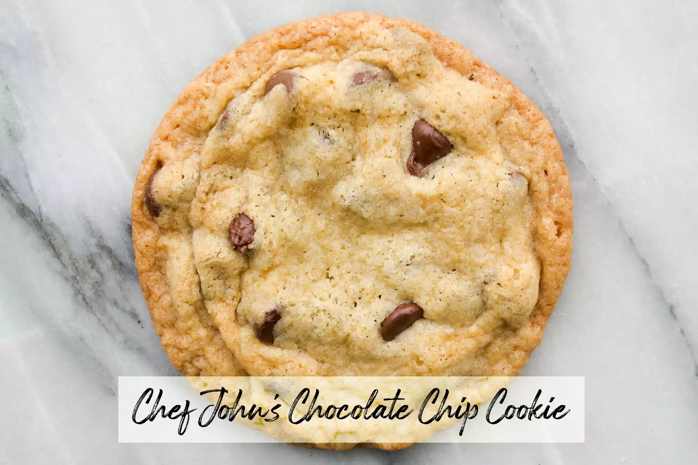

With more than 15,000 5-star reviews, this fan-favorite lasagna has to top the list. The consensus among reviewers: While this recipe does take over two hours to make, this lasagna tastes like it's from an Italian restaurant, even for first-time cooks. Calling it the world's best may be a little bold, but it certainly is best lasagna.
Cookies recipe This recipe made perfectly soft chocolate chip cookies. The dough is made with two packets of instant pudding mix — an ingredient I had never seen anyone use in cookie dough — which seems to give the cookies a softer, more bakery-style texture. Think of these as the "soft-baked" style cookies that have a somewhat pliable, bendy texture.
Chicken casserole recipe
Creamy and incredibly savory, it's a casserole that's hard to stop eating. The cottage cheese is the trick to getting such a creamy, melty texture. Using rotisserie chicken is a must for the recipe and helps keep it quick.